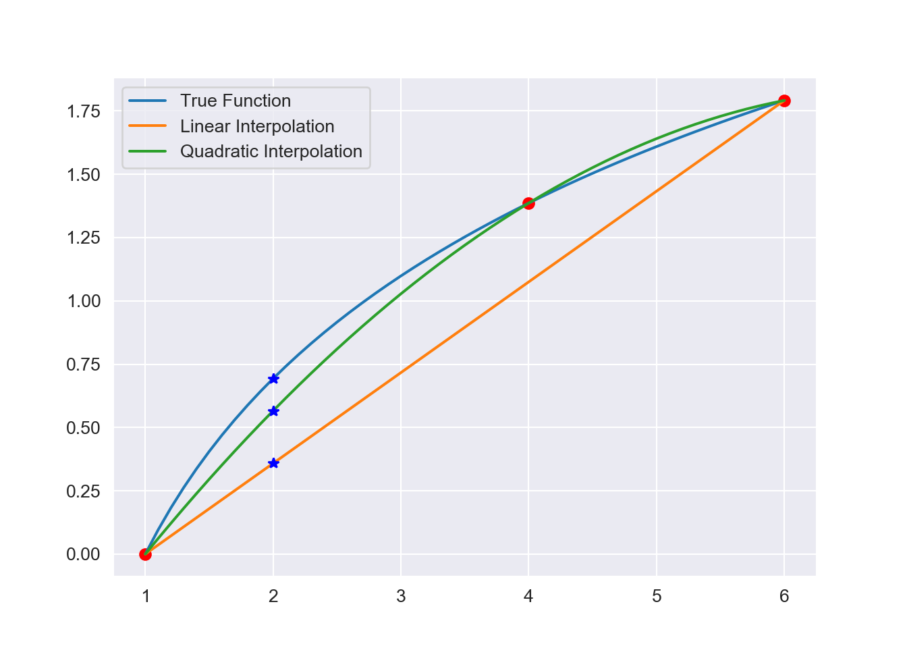
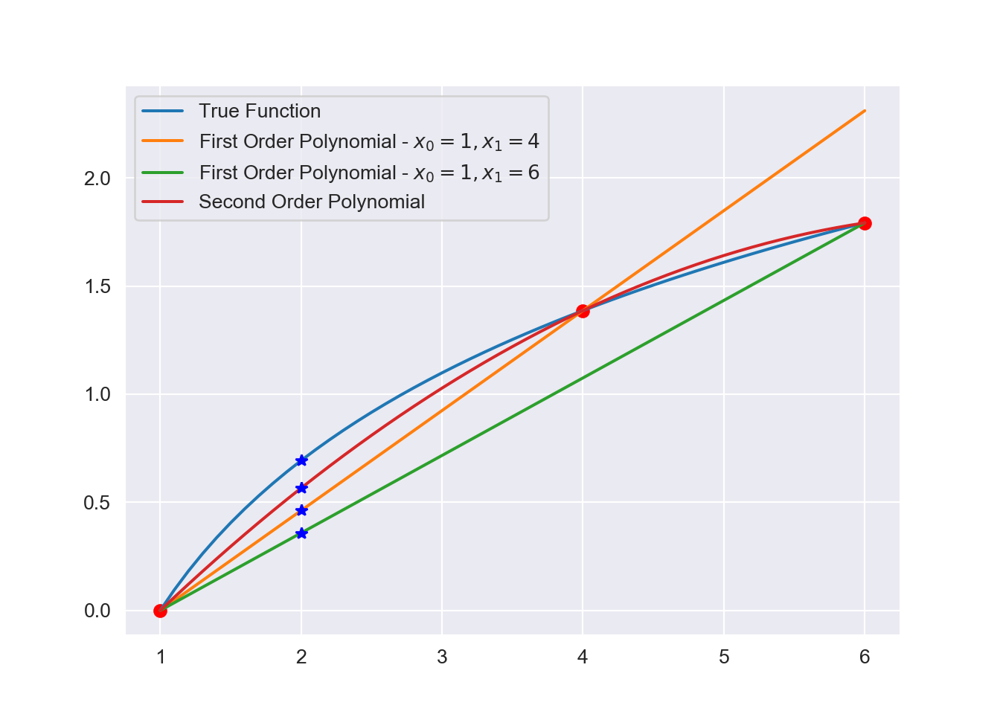
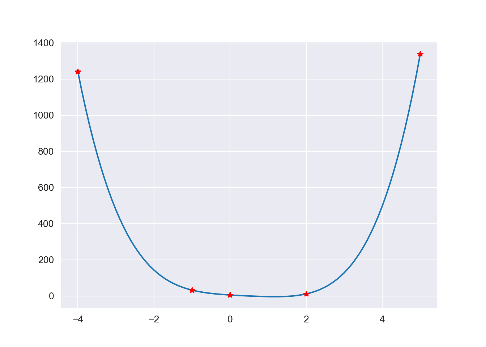

Chapter 5 Interpolation
Typically, from experimental observations or statistical measurements we may have the value of a function \(f\) at a set of points \(x_0,x_1,\cdots, x_n\) (\(x_0<x_1<\cdots < x_n\)). However, we do not have an analytic expression for \(f\) which would allow us to calculate the value of \(f\) at an arbitrary point.
You will frequently have occasion to estimate intermediate values between precise data points when dealing with real world data sets. The most common method used for this purpose is polynomial interpolation.
Polynomial functions which fit the known data are commonly used to allow us to approximate these arbitrary points. If we use this function to approximate \(f\) for some point \(x_0<x<x_n\) then the process is called interpolation. If we use it to approximate \(f\) for \(x<x_0\) or \(x>x_n\) then it is called extrapolation.
Polynomials are used because:
- Computers can handle them easily. Which makes for fast and efficient programming.
- The integration and differentiation of polynomials is straightforward computationally.
- Polynomials are smooth functions - i.e. not only is a polynomial a continuous function, but all the derivatives exist and are themselves continuous.
- Polynomials are uniformly approximate continuous functions. This means that, given any function, which is continuous on some interval \([a,b]\) and any positive number \(\epsilon\) (no matter how small) we can find a polynomial \(P\) such that \[|f(x)-P(x)|<\epsilon, \ \ \ \ x\in[a,b]\]
This result is known as Weierstrass Approximation theorem.
For \(n + 1\) data points, there is one and only one polynomial of order \(n\) that passes through all the points. For example, there is only one straight line (that is, a first-order polynomial) that connects two points. Similarly, only one parabola connects a set of three points. Polynomial interpolation consists of determining the unique nth-order polynomial that fits \(n + 1\) data points. This polynomial then provides a formula to compute intermediate values.
5.1 Weierstrauss Approximation Theorem
One of the most useful and well-known classes of functions mapping the set of real numbers into itself is the algebraic polynomials, the set of functions of the form, \[\begin{eqnarray} P_n(x) = a_nx^n+a_{n-1}^{n-1}+...+a_1x+a_0, \nonumber \end{eqnarray}\] where \(n\) is a nonnegative integer and \(a_0,...,a_n\) are real constants. One reason for their importance is that they uniformly approximate continuous functions. By this we mean that given any function, defined and continuous on a closed and bounded interval, there exists a polynomial that is as “close” to the given function as desired. This result is expressed precisely in the Weierstrass Approximation Theorem.

Note: Karl Weierstrass (1815-1897) is often referred to as the father of modern analysis because of his insistence on rigour in the demonstration of mathematical results. He was instrumental in developing tests for convergence of series, and determining ways to rigorously define irrational numbers. He was the first to demonstrate that a function could be everywhere continuous but nowhere differentiable, a result that shocked some of his contemporaries.
5.2 Linear Interpolation
Given only two points \((x_0,f(x_0))\) and \((x_1,f(x_1))\) (\(y=f(x)\)) the obvious interpolating function is the (unique) straight line that passes through them.
Let \(P_1(x)=a_0+a_1 x=f(x)\). Since this polynomial has to pass through these two points, it is required that: \[\begin{eqnarray} a_0+a_1x_0&=&f(x_0)\\ a_0+a_1x_1&=&f(x_1) \end{eqnarray}\] By solving for \(a_0\) and \(a_1\), it is easy to show that: \[ a_0={f(x_0) x_1-f(x_1) x_0\over x_1-x_0},\quad a_1={f(x_1)-f(x_0) \over x_1-x_0} \] and hence: \[ P_1(x) ={f(x_0) x_1-f(x_1) x_0\over x_1-x_0}+x{f(x_1)-f(x_0)\over x_1-x_0} \] which can be rearranged to yield: \[ P_1(x)=f(x_0)+ { f(x_1)- f(x_0)\over x_1-x_0} (x-x_0) \] which is a linear interpolating formula.
Hence at \(x=x^*\) the linear interpolate is : \[ f(x^*)= f(x_0)+ { f(x_1)- f(x_0)\over x_1-x_0} (x^*-x_0). \] Note that the quotient \({ f(x_1)- f(x_0)\over x_1-x_0}\) is the slope of the line joining \((x_0,f(x_0))\) and \((x_1,f(x_1))\). It is also a finite divided difference approximation to the first derivative.
5.2.0.1 Example
Estimate \(\ln (2)\) using linear interpolation given \(x_0=1\) and \(x_1=6\).
Solution:
\[ P_{(2)}=\ln 1+ {\ln 6-\ln 1\over 6-1} (2-1)=0.3583519 \] Calculator value \(\ln 2=0.6931472\).
In this case the error is large because for one the interval between the data points is large and secondly we are linearly approximating a non-linear function.
5.3 Quadratic Interpolation
The error in the above example results because we approximated a curve with a straight line. We can improve the estimate by introducing some curvature into the line connecting the data points.
Given three distinct points \((x_i,f(x_i))\), \(i=0,1,2\), a unique parabola (i.e., a second degree polynomial) can be fitted through them: \[\begin{equation} P_2(x)=b_0+b_1 x+b_2 x^2,\tag{5.1} \end{equation}\] by finding suitable coefficients \(b_0,\,b_1\) and \(b_2.\) A particularly convenient form for representing this polynomial is: \[\begin{equation} P_2(x)=a_0+a_1 (x-x_0)+a_2 (x-x_0)(x-x_1)\tag{5.2} \end{equation}\] Note: This polynomial is just equivalent to the general polynomial (5.1). This can be shown by multiplying out the terms in (5.2). \[ P_2(x)=(a_0-a_1 x_0+a_2 x_0 x_1)+ (a_1-a_2 x_0-a_2 x_1)x+a_2 x^2 \] and hence: \[ b_0 = a_0-a_1 x_0+a_2 x_0 x_1\ \ \ \ b_1 = a_1-a_2 x_0-a_2 x_1\ \ \ \ b_2 = a_2 \] Thus equations (5.1) and (5.2) are equivalent formulations of the unique second degree polynomial joining three points.
Determination of the coefficients \(a_0\), \(a_1\) and \(a_2\): The polynomial has to pass through the three points. Substituting in \(x=x_0\) and \(x=x_1\) gives: \[\begin{eqnarray} P_2(x_0) &=& a_0=f(x_0)\\ P_2(x_1) &=& f(x_0)+a_1 (x_1-x_0)=f(x_1),\ \ \ \ \Rightarrow a_1={f(x_1)-f(x_0)\over x_1- x_0} \end{eqnarray}\] Finally, substituting in \(x=x_2\) in (5.2) and making use of the evaluated values of \(a_0\) and \(a_1\), we can show, after some algebraic manipulations that: \[ a_2={{f(x_2)-f(x_1)\over x_2-x_1}- {f(x_1)-f(x_0)\over x_1-x_0}\over x_2-x_0} \] Note: that \(a_1\) still represents the slope of the line joining \((x_0, f(x_0))\) and \((x_1,f(x_1))\). The last term \(a_2(x-x_0)(x-x_1)\) introduces the second order curvature into the formula.
5.3.0.1 Example
Fit a second degree polynomial that goes through the points \(x_0=1\), \(x_1=4\) and \(x_2=6\) for \(f(x)=\ln x\). Use this polynomial to approximate \(\ln 2\).
Solution:
Polynomial, \[ P_2(x)=0+0.46209813(x-1)-0.051873116(x-1)(x-4) \] Estimate for \(\ln 2\), put \(x=2\) in \(P_2(x)\) \[ P_2(2)=0+0.46209813(2-1)-0.051873116(2-1)(2-4)=0.56584436 \] This is a more accurate result than obtained using linear interpolation. We now have a relative error of \(\epsilon = 18.4\%\). Thus, the curvature introduced by the quadratic formula improves the interpolation compared with the result obtained using straight lines.

5.4 Lagrange Interpolating Polynomials
The general class of interpolating polynomials that require specification of certain points through which they must pass is called Lagrange polynomials. Suppose we want to determine a first degree polynomial that passes through two points \((x_0,y_0)\) and \((x_1,y_1)\). Let such a polynomial have the form: \[\begin{eqnarray*} P(x)&=&\frac{(x-x_1)}{(x_0-x_1)}y_0+\frac{(x-x_0)}{(x_1-x_0)}\ y_1 \\ &=& L_0(x)y_0+L_1(x)y_1 \end{eqnarray*}\] It is easy to verify that \(P(x_0)=y_0\) and \(P(x_1)=y_1.\) Thus the polynomial agrees with the functional values at the two stipulated points. We also note the following about the quotients \(L_0(x)\) and \(L_1(x)\). When \(x=x_0,\; L_0(x_0)=1\) and \(L_1(x_0)=0.\) When \(x=x_1,\;L_0(x_1)=0\) and \(L_1(x_1)=1.\) Thus we need to construct the quotients \(L_0(x)\) and \(L_1(x)\) to determine the polynomial.
In general, to construct a polynomial of degree at most \(n\) that passes through the \(n+1\) points \((x_0,f(x_0)),\;(x_1,f(x_1)),\ldots,(x_n,f(x_n))\), we need to construct for \(k=0,1,\ldots,n,\) a quotient \(L_{n,k}(x)\) with the property that \(L_{n,k}(x_i)=0\) when \(i\neq k\) and \(L_{n,k}(x_k)=1.\) To satisfy \(L_{n,k}(x_i)=0\) for each \(i\neq k\) requires that the numerator of \(L_{n,k}\) to contain the term: \[ (x-x_0)(x-x_1)\ldots(x-x_{k-1})(x-x_{k+1})\ldots(x-x_n). \] To satisfy \(L_{n,k}(x_k)=1,\) the denominator of \(L_{n,k}\) must equal the denominator of the above numerator evaluated at \(x=x_k\). Thus: \[\begin{eqnarray*} L_{n,k}(x)&=&\frac{(x-x_0)\ldots(x-x_{k-1})(x-x_{k+1})\ldots(x-x_n)}{(x_k-x_0)\ldots(x_k-x_{k-1})(x_k-x_{k+1})\ldots(x_k-x_n)}\\ &=&\prod_{i=0,i\neq k}^n \frac{(x-x_i)}{(x_k-x_i)}.\end{eqnarray*}\] The lagrange interpolating polynomial is thus given by: \[\begin{equation} P(x)=L_{n,0}(x)f(x_0)+L_{n,1}(x)f(x_1)+\ldots +L_{n,n}(x)f(x_n) \end{equation}\] If there is no confusion about the degree of the required polynomial we shall simply use \(L_k\) instead of \(L_{n,k}.\)
Error in Lagrange polynomial:
The error in the approximation by the Lagrange interpolating polynomial can be estimated if \(f(x)\) is known as: \[\begin{equation} E(x)=\frac{f^{(n+1)}(\xi(x))}{(n+1)!}\prod_{i=0}^n (x-x_i), \end{equation}\] for some \(\xi(x)\in (a,b),\; a\leq x_0\leq x-1\leq \ldots \leq x_n\leq b_n,\) assuming \(f^{(n+1)}(x)\) is continuous on \([a,b].\)
5.4.0.1 Example
Use a Lagrange interpolating polynomial of the first and second order to evaluate \(ln (x)\) on the basis of the given data points and estimate the value at \(x=2\)
\[\begin{equation*} L_i(x) = \prod_{i=0, i\neq k}^n \dfrac{x-x_k}{x_i-x_k} \end{equation*}\]
\[\begin{eqnarray} &x_0 = 1;& \ \ \ f(x_0)= 0 \nonumber \\ &x_1 = 4;& \ \ \ f(x_1) = 1.386294 \nonumber \\ &x_2 = 6;& \ \ \ f(x_2) = 1.791760 \nonumber \end{eqnarray}\]
First Order:
We have the following equation for the first order Lagrange polynomial, \[\begin{equation*} P_1(x) = \dfrac{x-x_1}{x_0-x_1}f(x_0) + \dfrac{x-x_0}{x_1-x_0}f(x_1) \end{equation*}\] Therefore we obtain, \[\begin{eqnarray} P_1(2) &=& \dfrac{2-4}{1-4}(0) + \dfrac{2-1}{4-1}(1.386294) \nonumber \\ && \nonumber \\ &=& 0.4620981. \nonumber \end{eqnarray}\]
Second Order:
We have the following equation for the second order Lagrange polynomial, \[\begin{equation*} P_2(x) = \dfrac{(x-x_1)(x-x_2)}{(x_0-x_1)(x_0-x_2)}f(x_0) + \dfrac{(x-x_0)(x-x_2)}{(x_1-x_0)(x_1-x_2)}f(x_1) + \dfrac{(x-x_0)(x-x_1)}{(x_2-x_0)(x_2-x_1)}f(x_2) \end{equation*}\] Therefore we obtain, \[\begin{eqnarray} P_2(2) &=& \dfrac{(2-4)(2-6)}{(1-4)(1-6)}(0) + \dfrac{(2-1)(2-6)}{(4-1)(4-6)}(1.386294) + \dfrac{(2-1)(2-4)}{(6-1)(6-4)}(1.791760) \nonumber \\ && \nonumber \\ &=& 0.565844\nonumber \end{eqnarray}\]

5.4.0.2 Example
Use the following data to approximate \(f(1.5)\) using the Lagrange interpolating polynomial for \(n=1,2,\) and \(3\).
| \(x_i\) values | 1 | 1.3 | 1.6 | 1.9 | 2.2 |
|---|---|---|---|---|---|
| \(f(x_i)\) | 0.7651977 | 0.6200860 | 0.4554022 | 0.2818186 | 0.1103623 |
The interpolating polynomial show be, \[\begin{eqnarray} P(x) = (((0.0018251 x+0.0552928) x-0.343047) x+0.0733913) x+0.977735, \nonumber \end{eqnarray}\] which gives, \[\begin{eqnarray} P(1.5) = 0.508939. \nonumber \end{eqnarray}\]
5.5 Newton’s Divided Differences
We first introduce the notation for the divided differences:
- The zeroth divided difference of \(f\) w.r.t. \(x_i\) is \(f[x_i]=f(x_i)=f_i\).
- The first divided difference of \(f\) w.r.t. \(x_i\) and \(x_{i+1}\) is: \[ f[x_i,x_{i+1}] = {f[x_{i+1}]-f[x_i]\over x_{i+1}-x_i}={f_{i+1}-f_i\over x_{i+1}-x_i} \]
- The Second divided difference of \(f\) w.r.t. \(x_i\), \(x_{i+1}\) and \(x_{i+2}\) is: \[ f[x_i,x_{i+1},x_{i+2}] = {f[x_{i+1},x_{i+2}]-f[x_i,x_{i+1}]\over x_{i+2}-x_i} \]
- The \(k^{th}\) divided difference of \(f\) w.r.t. \(x_i, x_{i+1},\cdots, x_{i+k}\) is: \[ f[x_i,x_{i+1},\cdots, x_{i+k}] = {f[x_{i+1},x_{i+2},\cdots, x_{i+k}]-f[x_i,x_{i+2},\cdots, x_{i+k-1}]\over x_{i+k}-x_i} \]
We now fit an \(n\)th degree interpolating polynomial to the \(n+1\) data points \((x_i,f(x_i)),\;i=0,1,\cdots,n\) in the form: \[ P_n(x)=a_0+a_1(x-x_0)+a_2(x-x_0)(x-x_1)+\cdots+a_n(x-x_0)(x-x_1)\cdots (x-x_{n-1}). \] Since the polynomial must pass through the points \((x_i,f_i)\) we have:
- \(x=x_0\) \(P_n(x_0)=f_0=a_0=f[x_0]\)
- \(x=x_1\) \(P_n(x_1)=f_1=f[x_0]+a_1(x_1-x_0)=f[x_1] \ \ \ \Rightarrow a_1={f[x_1]-f[x_0]\over x_1-x_0} =f[x_0,x_1].\)
- \(x=x_2\) \[ P_n(x_2)=f_2=f[x_2]=f[x_0]+f[x_0,x_1](x_2-x_0)+a_2(x_2-x_0)(x_2-x_1), \] and therefore: \[ a_2={f[x_2]-f[x_0]-f[x_0,x_1](x_2-x_0)\over (x_2-x_0)(x_2-x_1)} \] With some algebraic manipulation it can be shown that: \[ a_2={f[x_1,x_2]-f[x_0,x_1]\over x_2-x_0} =f[x_0,x_1,x_2] \]
In general: \[a_k=f[x_0,x_1,\cdots,x_k]\] so that: \[\begin{eqnarray} P_n(x) &=& f[x_0]+\sum_{k=1}^n f[x_0,\cdots,x_k](x-x_0)\cdots (x-x_{k-1})\nonumber\\ &=& f[x_0]+\sum_{k=1}^n f[x_0,\cdots,x_k]\prod_{i=0}^{k-1}(x-x_i) \end{eqnarray}\] called Newton’s divided difference interpolating polynomial. All divided differences are calculated in a similar process and the results are usually tabulated in:
a divided difference table:
| \(x_i\) | \(f[x_i]\) | \(f\left[x_i,x_{i+1}\right]\) | \(f\left[x_i,x_{i+1},x_{i+2}\right]\) | \(f[x_i,x_{i+1},x_{i+2}, x_{i+3}]\) | \(f[x_i,x_{i+1},x_{i+2}, x_{i+3}, x_{i+4}]\) |
|---|---|---|---|---|---|
| \(x_0\) | \(f[x_0]\) | ||||
| \(f[x_0,x_1]\) | |||||
| \(x_1\) | \(f[x_1]\) | \(f[x_0,x_1,x_2]\) | |||
| \(f[x_1,x_2]\) | \(f[x_0,x_1,x_2,x_3]\) | ||||
| \(x_2\) | \(f[x_2]\) | \(f[x_1,x_2,x_3]\) | \(f[x_0,x_1,x_2,x_3,x_4]\) | ||
| \(f[x_2,x_3]\) | \(f[x_1,x_2,x_3,x_4]\) | ||||
| \(x_3\) | \(f[x_3]\) | \(f[x_2,x_3,x_4]\) | |||
| \(f[x_3,x_4]\) | |||||
| \(x_4\) | \(f[x_4]\) |
5.5.0.1 Exercise
Use a third degree polynomial passing through the points \((1,\ln 1)\), \((4,\ln 4)\), \((5,\ln 5)\) and \((6,\ln 6)\) to estimate \(\ln 2\). (Ans: \(P_3(2)= 0.62876869\)).
5.5.0.2 Example
Find a polynomial satisfied by \((-4,1245),\;(-1,33),\; (0,5),\; (2,9),\;(5,1335)\).
Solution:
| \(x_i\) | \(f(x_i)\) | \(f[x_i,x_{i+1}]\) | \(f[x_i,x_{i+1},x_{i+2}]\) | \(f[x_i,x_{i+1},x_{i+2},x_{i+3}]\) | \(f[x_i,x_{i+1},x_{i+2},x_{i+3},x_{i+4}]\) |
|---|---|---|---|---|---|
| \(-4\) | \(1245\) | ||||
| \(-404\) | |||||
| \(-1\) | \(33\) | \(94\) | |||
| \(-28\) | \(-14\) | ||||
| \(0\) | \(5\) | \(10\) | 3 | ||
| \(2\) | 13 | ||||
| \(2\) | \(9\) | 88 | |||
| \(442\) | |||||
| \(5\) | \(1335\) |
Hence, \[\begin{eqnarray} P_4(x) &=&1245-404(x+4)+94(x+4)(x+1)-14(x+4)(x+1)(x)\\ &&+3(x+4)(x+1)x(x-2)\nonumber \\ &=& 3 x^4-5 x^3+ 6x^2-14x+5.\nonumber \end{eqnarray}\] Note: If an extra data point \((x,f(x))\) is added, we only need to add an additional term to the \(P_n(x)\) already found.
x = np.array([-4, -1, 0, 2, 5])
y = np.array([1245, 33, 5, 9, 1335])
f = lambda x: 3*x**4 - 5*x**3 + 6*x**2 -13*x + 5
X = np.arange(-4, 5.1, 0.1)
Y = f(X)
plt.figure()
plt.plot(X, Y)
plt.plot(x, f(x), 'r*')
plt.show()
In general if \(P_n(x)\) is the interpolating polynomial through the \((n+1)\) points \((x_i,f_i),\;i=0,1,\cdots,n\), then the Newton’s divided difference formula gives \(P_{n+1}\) through these points plus one more point \((x_{n+1},f_{n+1})\) as i.e., \[\begin{equation} P_{n+1}(x)=P_n(x)+f[x_0,x_1,\cdots,x_n,x_{n+1}]\prod_{i=0}^{n} (x-x_i) \end{equation}\] \(P_{n+1}(x)\) improves the interpolation by introducing additional curvature.
5.5.1 Errors of Newton’s interpolating polynomials
Let \(P_{n+1}(x)\) be the \((n+1)\)th degree polynomial which fits \(y=f(x)\) at the \(n+2\) points, \((x_0,f(x_0)),\;\;(x_1,f(x_1)),\cdots,\; (x_n,f(x_n), (x, f(x))\). The last point is a general point. Then: \[P_{n+1}(x)=P_n(x)+f[x_0,x_1,\cdots,x_n,x]\prod_{i=0}^{n} (x-x_i)\] since \(f(x)\approx P_{n+1}(x)\), we have \[ \epsilon_n(x)=P_{n+1}(x)-P_n(x)= f[x_0,x_1,\cdots,x_n,x]\prod_{i=0}^{n}(x-x_i) \] Remarks: For \(n=0\), \[ f[x_0,x]={f(x)-f(x_0)\over x-x_0}. \] We have:
- (Mean value theorem) \(f[x_0,x]={f(x)-f(x_0)\over x-x_0}=f^\prime(\xi),\ \ \ \xi\in[x_0,x]\).
- (Definition of a derivative) \(\lim{x\to x_0} f[x_0,x]=f^\prime(x_0)\).
In general, it can be shown that \[ f[x_0,x_1,\cdots,x_n]={1\over n!} f^{(n)}(\xi),\ \ \ \ \xi\in [x_0,x_n]\] and hence: \[\begin{equation} f[x_0,x_1,\cdots,x_n,x]={1\over (n+1)!} f^{(n+1)}(\xi),\ \ \ \ \xi\in [x_0,x] \end{equation}\] The error is then: \[\begin{eqnarray} \epsilon_n(x) &=& f[x_0,x_1,\cdots,x_n,x]\prod_{i=0}^{n}(x-x_i)\nonumber \\ &=& {1\over (n+1)!} f^{(n+1)}(\xi)\prod_{i=0}^{n}(x-x_i),\ \ \ \ \xi\in [x_0,x] \end{eqnarray}\]
5.6 Cubic Splines Interpolation
The previous sections concerned the approximation of arbitrary functions on closed intervals by the use of polynomials. However, the oscillatory nature of the high-degree polynomials, and the property that a fluctuation over a small portion of the interval can induce large fluctuations over the entire range, restricts their use.
The concept of the spline fit originated from the drafting technique of using a thin, flexible strip to draw a smooth curve through a set of given points. The flexible spline was pinned or held by weights so that the curve passed through all the data points. The spline passed smoothly from one interval to the next because of the laws governing beam flexure.
The most widely used spline fitting is the cubic spline. In the cubic spline procedure, a cubic polynomial is passed through each pair of points in such a manner that the first and second derivatives are continuous throughout the table of points.
A cubic spline \(s\) with knots \(x_0<x_1<\cdots\;<x_n\) satisfies:For \(x_{i-1}<x<x_i\) let \(s(x)=s_i(x)\)
The first condition is that the spline must pass through all the data points. So: \[\begin{equation} f_i = a_i + b_i(x_i-x_i) + c_i(x_i-x_i)^2 + d_i(x_i-x_i)^3, \end{equation}\] which simplifies to, \[\begin{equation} a_i = f_i. \end{equation}\] Therefore, the constant in each cubic must be equal to the value of the dependent variable at the beginning of the interval. This result can incorporated into, \[\begin{equation} s_i(x) = f_i + b_i(x-x_i) + c_i(x-x_i)^2+d_i(x-x_i)^3. \tag{5.3} \end{equation}\] Where the coefficients, \(b_i,d_i\) are solved using the following, \[\begin{eqnarray} b_i &=& \dfrac{f_{i+1}-f_i}{h_i}-\dfrac{h_i}{3}(2c_i + c_{i+1}), \\ d_i &=& \dfrac{c_{i+1}-c_i}{3h_i}, \end{eqnarray}\] where \(h_i\) is simply, \[\begin{equation} h_i = x_{i+1} - x_i. \end{equation}\] The solution for \(c_i\) is somewhat more complicated. This enforces us to make use of systems of linear equations by solving the following tridiagonal system, \[ \begin{bmatrix} 1 & & & \\ h_1 & 2(h_1+h_2) &h_2 & \\ \ddots &\ddots &\ddots & \\ & h_{n-2} & 2(h_{n-2}+h_{n-1}) & h_{n-1} \\ & & & 1 \end{bmatrix} \begin{Bmatrix} c_1\\ c_2\\ \vdots\\ c_{n-1}\\ c_n \end{Bmatrix} = \begin{bmatrix} 0\\ 3(f[x_3,x_2]-f[x_2,x_1])\\ \vdots\\ 3(f[x_n,x_{n-1}]-f[x_{n-1},x_{n-2}])\\ 0 \end{bmatrix}. \]
5.6.0.1 Example
Consider the table below. Fit cubic splines to the data and utilize the results to estimate the value at \(x=5\).
| \(i\) | \(x_i\) | \(f_i\) |
|---|---|---|
| 1 | 3 | 2.5 |
| 2 | 4.5 | 1 |
| 3 | 7 | 2.5 |
| 4 | 9 | 0.5 |
Solution:
The first step is to generate the set of simultaneous equations that will be utilized to determine the \(c\) coefficients: \[ \begin{bmatrix} 1 & 0 & 0&0 \\ 1.5 & 8 &2.5 &0 \\ 0 & 2.5 & 9 & 2 \\ 0 & 0 & 0 & 1 \end{bmatrix} \begin{Bmatrix} c_1\\ c_2\\ c_3\\ c_4 \end{Bmatrix} = \begin{bmatrix} 0\\ 3(0.6+1)\\ 3(-1-0.6)\\ 0 \end{bmatrix}. \]
\[ \Rightarrow \begin{bmatrix} 1 & 0 & 0&0 \\ 1.5 & 8 &2.5 &0 \\ 0 & 2.5 & 9 & 2 \\ 0 & 0 & 0 & 1 \end{bmatrix} \begin{Bmatrix} c_1\\ c_2\\ c_3\\ c_4 \end{Bmatrix} = \begin{bmatrix} 0\\ 4.8\\ -4.8\\ 0 \end{bmatrix}. \] Therefore: \[ \Rightarrow \bar{c}= \begin{bmatrix} 0\\0.839543726\\-0.766539924\\0 \end{bmatrix}. \] Using our values for c we obtain the following for our \(d\)’s, \[\begin{eqnarray} d_1 &=& 0.186565272,\nonumber \\ d_2 &=& -0.214144487, \nonumber \\ d_3 &=& 0.127756654. \nonumber \end{eqnarray}\] We can then compute the \(b\)’s using equation (1.4), \[\begin{eqnarray} b_1 &=& -1.419771863,\nonumber \\ b_2 &=& -0.160456274, \nonumber \\ b_3 &=& 0.022053232. \nonumber \end{eqnarray}\] These results allow us to develop the cubic splines for each interval using Equation (5.3): \[\begin{eqnarray} s_1(x) &=& 2.5-1.419771863(x-3) +0.186565272(x-3)^3, \nonumber \\ s_2(x) &=& 1 -0.160456274(x-4.5) +0.839543726(x-4.5)^2-0.214144487(x-4.5)^3, \nonumber \\ s_3(x) &=& 2.5 + 0.022053232(x-7) - 0.766539924(x-7)^2 + 0.127756654(x-7)^3. \nonumber \end{eqnarray}\] The three equations can then be employed to compute values within each interval. For example, the value at \(x=5\), which falls within the second interval, is calculated as, \[\begin{eqnarray} s_2(5) &=& 1 -0.160456274(5-4.5) +0.839543726(5-4.5)^2-0.214144487(5-4.5)^3 \nonumber \\ &=& 1.102889734. \nonumber \end{eqnarray}\]
5.6.1 Runge’s Phenomenon
A major problem with interpolation is Runge’s Phenomenon. Let us consider an example in Mathematica:
ClearAll[data, x];
data = RandomReal[{-10, 10}, 20];
ListPlot[data]
Manipulate[
Show[
Plot[InterpolatingPolynomial[data[[1 ;; n]], x], {x, 1, n},
PlotRange -> All],
ListPlot[data, PlotStyle -> Directive[PointSize[Large], Red]],
PlotRange -> All
], {n, 2, Length[data], 1}]
pctrl[d_, param_, noeud_] :=
LinearSolve[
Module[{n = Length[d]},
Table[BSplineBasis[{3, noeud}, j - 1, param[[i]]], {i, n}, {j,
n}]], d]
tcentr[d_] :=
Module[{a},
a = Accumulate[
Table[Norm[d[[i + 1]] - d[[i]]]^(1/2), {i, Length[d] - 1}]];
N[Prepend[a/Last[a], 0]]]
noeudmoy[d_, param_] :=
Join[{0, 0, 0, 0},
Table[1/3*Sum[param[[i]], {i, j, j + 2}], {j, 2,
Length[param] - 3}], {1, 1, 1, 1}]
dpts = Table[{i, data[[i]]}, {i, Length[data]}];
Manipulate[Module[{pCt},
pCt = pctrl[dpts[[1 ;; n]], tcentr[dpts[[1 ;; n]]],
noeudmoy[dpts[[1 ;; n]], tcentr[dpts[[1 ;; n]]]]];
Show[
ParametricPlot[
BSplineFunction[pCt,
SplineKnots ->
noeudmoy[dpts[[1 ;; n]], tcentr[dpts[[1 ;; n]]]]][x], {x, 0,
1}, PlotRange -> All],
ListPlot[data, PlotStyle -> Directive[PointSize[Large], Red]],
PlotRange -> All
]], {n, 4, Length[data], 1}]Thus we can see that high order polynomials lead to an exponential growth of the infinity norm error. To overcome this we used the splines technique from above, however, another method one could use is Chebyshev polynomials. Here points are distributed more densely towards the bounds of the interval.
5.6.2 Exercises
- Given the data points:
| \(x\) | -1.2 | 0.3 | 1.1 |
|---|---|---|---|
| \(y\) | -5.76 | -5.61 | -3.69 |
determine \(y\) at \(x = 0\) using (a) Lagrange’s method and (b) Newton’s Divided Differences.
- Given the data:
| \(x\) | 0.4 | 0.5 | 0.7 | 0.8 |
|---|---|---|---|---|
| \(y\) | 1.086 | 1.139 | 1.307 | 1.435 |
Estimate \(f(0.6)\) from the data using: (a) a second degree Lagrange polynomial (b) a third degree Lagrange polynomial
- Given \(f(-2)=46,\; f(-1)=4,\;f(1)=4,\;f(3)=156,\; f(4)=484\), use Newton Divided Differences to estimate \(f(0)\).
- Let \(P(x)\) be the degree 5 polynomial that takes the value 10 at \(x = 1, 2, 3, 4, 5\) and the value 15 at \(x = 6\). Find \(P(7)\).
- Write down a polynomial of degree exactly 5 that interpolates the four points \((1, 1), (2, 3), (3, 3), (4, 4)\).
- Find \(P(0)\), where \(P(x)\) is the degree 10 polynomial that is zero at \(x = 1, \ldots, 10\) and satisfies \(P(12) = 44\).
- Write down the degree 25 polynomial that passes through the points \((1, -1), (2, -2), \ldots, (25, -25)\) and has constant term equal to 25.
- Use the method of divided differences to find the degree 4 interpolating polynomial \(P_4(x)\) for the data \((0.6, 1.433329), (0.7, 1.632316), (0.8, 1.896481), (0.9, 2.247908)\) and \((1.0, 2.718282)\). Next calculate \(P_4(0.82)\) and \(P_4(0.98)\). The aforementioned data is sampled from the function \(f(x) = e^x\). Compute the absolute and relative errors of your approximations at \(P_4(0.82)\) and \(P_4(0.98)\).